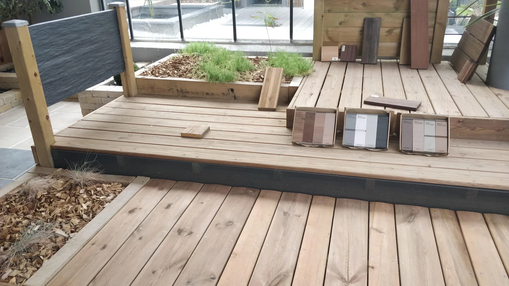
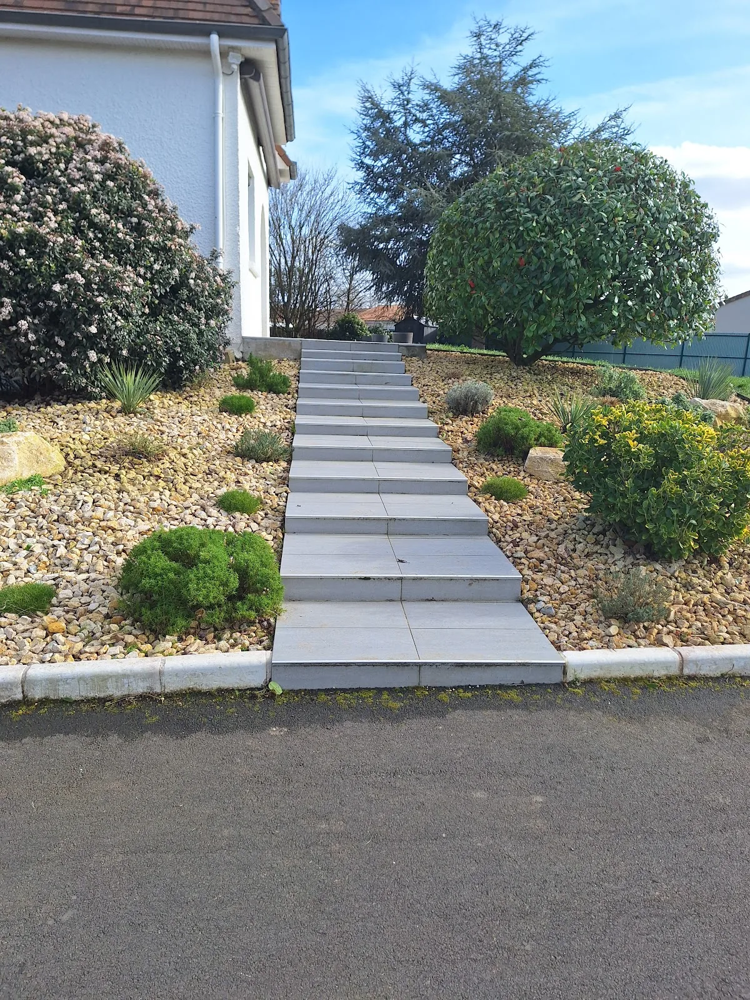

Imaginer avant de construire.
Des premiers échanges aux vues 3D, la conception pose les bases d’un extérieur cohérent, adapté aux usages et aux contraintes du lieu.
Demander un rendez-vous →
Un projet structuré, étape après étape.
La conception associe échange, relevés, esquisses, réflexion végétale, choix des matériaux et présentation du projet.
Découverte de votre projet
Un premier échange permet de qualifier la demande et d’orienter le rendez-vous vers l’interlocuteur adapté.
Rendez-vous & relevés
Les envies, le budget et les usages sont précisés, puis les mesures, niveaux et photos nécessaires à l’étude sont relevés sur place.
Phase de conception
Esquisses, étude de faisabilité, recherche de matériaux et palette végétale sont assemblées pour donner une cohérence au projet.
Présentation du projet
Des vues 3D d’ambiance et les matériaux proposés permettent de se projeter avant de valider les grandes phases de travaux.
Préparation du chantier
Les matériaux sont commandés, contrôlés et l’organisation de la réalisation est préparée avec les équipes concernées.
Dessiner avec les saisons.
La palette végétale se construit en tenant compte du sol, des volumes, de l’esthétique recherchée et de la manière dont le jardin sera vécu. La conception peut associer massifs, arbres, arbustes et vivaces à des éléments minéraux ou bois.
Voir les univers d’aménagement →